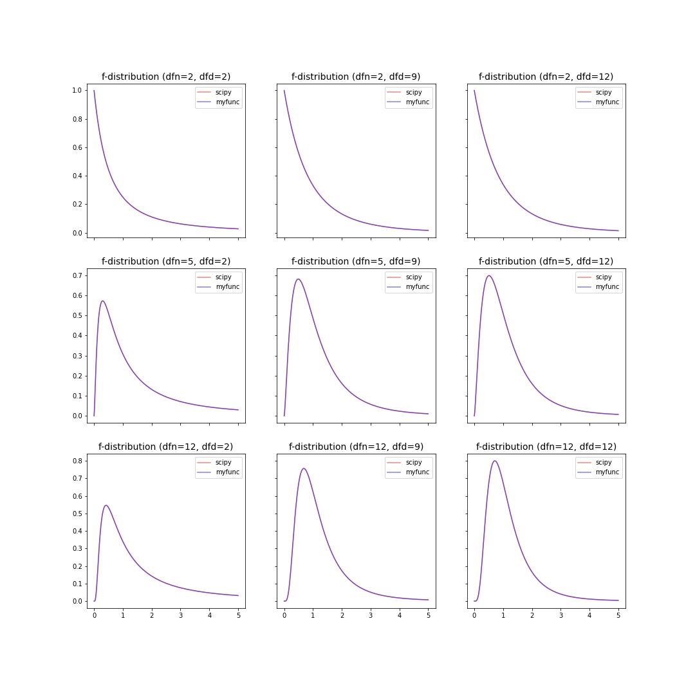

teilab.statistics module¶
Statistical hypothesis testing is required to determine if expression levels (gProcessedSignal s) have changed between samples with siRNA and those without siRNA.
A statistical hypothesis test is a method of statistical inference. An alternative hypothesis is proposed for the probability distribution of the data. The comparison of the two models is deemed statistically significant if, according to a threshold probability—the significance level ( \(\alpha\) ) — the data would be unlikely to occur if the null hypothesis were true. The pre-chosen level of significance is the maximal allowed “false positive rate”. One wants to control the risk of incorrectly rejecting a true null hypothesis.
The process of distinguishing between the null hypothesis and the alternative hypothesis is aided by considering two conceptual types of errors.
The first type of error occurs when the null hypothesis is wrongly rejected. (type 1 error)
The second type of error occurs when the null hypothesis is wrongly not rejected. (type 2 error)
Hypothesis tests based on statistical significance are another way of expressing confidence intervals (more precisely, confidence sets). In other words, every hypothesis test based on significance can be obtained via a confidence interval, and every confidence interval can be obtained via a hypothesis test based on significance. 1
Various alternative hypotheses can be handled by changing the value of A
In this submodules, you can test each null (alternative) hypothesis by changing the value of alternative
Terminology |
|
Alternative Hypothesis |
Rejection Region |
|---|---|---|---|
right-tailed |
|
\(H_a:\sigma^2_1 > \sigma^2_2\) |
\(\mathbf{F}\geq F_{\alpha}\) |
left-tailed |
|
\(H_a:\sigma^2_1 < \sigma^2_2\) |
\(\mathbf{F}\leq F_{1−\alpha}\) |
two-tailed |
|
\(H_a:\sigma^2_1 \neq \sigma^2_2\) |
\(\mathbf{F}\leq F_{1−\alpha∕2}\) or \(\mathbf{F}\geq F_{\alpha∕2}\) |
Follow the chart below to select the test.
![digraph RAMPreprocessingGraph {
graph [
charset = "UTF-8";
label = "Statistical Hypothesis Testing",
labelloc = "t",
labeljust = "c",
bgcolor = "#1f441e",
fontcolor = "white",
fontsize = 18,
style = "filled",
rankdir = TB,
margin = 0.2,
ranksep = 1.0,
nodesep = 0.9,
layout = "dot",
compound = true,
];
node [
shape = diamond,
style = "solid,filled",
fontsize = 16,
fontcolor = 6,
fontname = "fantasy",
color = "#cee6b4",
fillcolor = "#9ecca4",
fixedsize = false,
margin = "0.05",
];
distribution [label="Distribution"];
numSamples1 [label="Number of Samples"];
numSamples2 [label="Number of Samples"];
sampleRelationships11 [label="Relationship of Samples"];
sampleRelationships21 [label="Relationship of Samples"];
sampleRelationships22 [label="Relationship of Samples"];
node [
shape = rect,
style = "solid,filled",
fontsize = 20,
fontcolor = 6,
fontname = "times",
color = "#cee6b4",
fillcolor = "#fff5b7",
fixedsize = false,
margin = "0",
];
f_test [label = <<table border="0" cellspacing="10" bgcolor="white"><tr><td></td><td port="varname" align="left" border="1" color="#e1e4e5" bgcolor="white" width="70" fixedsize="true"><font point-size="16" face="monaco" color="#e74c3c">f_test</font></td><td></td></tr><tr><td colspan="3" port="location"><font face="times">F-test</font></td></tr></table>>]
paired_t_test [label = <<table border="0" cellspacing="10" bgcolor="white"><tr><td></td><td port="varname" align="left" border="1" color="#e1e4e5" bgcolor="white" width="130" fixedsize="true"><font point-size="16" face="monaco" color="#e74c3c">paired_t_test</font></td><td></td></tr><tr><td colspan="3" port="location"><font face="times">Paired t-test</font></td></tr></table>>]
student_t_test [label = <<table border="0" cellspacing="10" bgcolor="white"><tr><td></td><td port="varname" align="left" border="1" color="#e1e4e5" bgcolor="white" width="140" fixedsize="true"><font point-size="16" face="monaco" color="#e74c3c">student_t_test</font></td><td></td></tr><tr><td colspan="3" port="location"><font face="times">Student's t-test</font></td></tr></table>>]
welch_t_test [label = <<table border="0" cellspacing="10" bgcolor="white"><tr><td></td><td port="varname" align="left" border="1" color="#e1e4e5" bgcolor="white" width="120" fixedsize="true"><font point-size="16" face="monaco" color="#e74c3c">welch_t_test</font></td><td></td></tr><tr><td colspan="3" port="location"><font face="times">Welch's t-test</font></td></tr></table>>]
anova [label = <<table border="0" cellspacing="10" bgcolor="white"><tr><td></td><td port="varname" align="left" border="1" color="#e1e4e5" bgcolor="white" width="60" fixedsize="true"><font point-size="16" face="monaco" color="#e74c3c">anova</font></td><td></td></tr><tr><td colspan="3" port="location"><font face="times">ANOVA</font></td></tr></table>>]
wilcoxon_test [label = <<table border="0" cellspacing="10" bgcolor="white"><tr><td></td><td port="varname" align="left" border="1" color="#e1e4e5" bgcolor="white" width="130" fixedsize="true"><font point-size="16" face="monaco" color="#e74c3c">wilcoxon_test</font></td><td></td></tr><tr><td colspan="3" port="location"><font face="times">Wilcoxon signed-rank test</font></td></tr></table>>]
u_test [label = <<table border="0" cellspacing="10" bgcolor="white"><tr><td></td><td port="varname" align="left" border="1" color="#e1e4e5" bgcolor="white" width="70" fixedsize="true"><font point-size="16" face="monaco" color="#e74c3c">u_test</font></td><td></td></tr><tr><td colspan="3" port="location"><font face="times">Mann-Whitney U test</font></td></tr></table>>]
friedman_test [label = <<table border="0" cellspacing="10" bgcolor="white"><tr><td></td><td port="varname" align="left" border="1" color="#e1e4e5" bgcolor="white" width="130" fixedsize="true"><font point-size="16" face="monaco" color="#e74c3c">friedman_test</font></td><td></td></tr><tr><td colspan="3" port="location"><font face="times">Friedman test</font></td></tr></table>>]
kruskal_wallis_test [label = <<table border="0" cellspacing="10" bgcolor="white"><tr><td></td><td port="varname" align="left" border="1" color="#e1e4e5" bgcolor="white" width="190" fixedsize="true"><font point-size="16" face="monaco" color="#e74c3c">kruskal_wallis_test</font></td><td></td></tr><tr><td colspan="3" port="location"><font face="times">Kruskal-wallis test</font></td></tr></table>>]
edge [
style = solid,
fontsize = 14,
fontname = "times",
fontcolor = white,
color = white,
labelfloat = false,
arrowhead = vee,
headport = n,
arrowsize = 1.5,
];
subgraph cluster_1 {
label = "Parametric Test";
labelloc = "t";
labeljust = "c";
fillcolor = "#89898989";
fontcolor = "#ffd56b";
margin = 20;
distribution -> numSamples1 [label="Under\n(Normal) Distribution" color="#f4c7ab" fontcolor="#f4c7ab"];
numSamples1 -> sampleRelationships11 [label="2" tailport=sw color="#f4c7ab" fontcolor="#f4c7ab"];
subgraph cluster_11{
label = "Two-Sample Test";
sampleRelationships11 -> paired_t_test [label="Paired" tailport=sw color="#f4c7ab" fontcolor="#f4c7ab"];
sampleRelationships11 -> welch_t_test [label="Independent" tailport=se color="#deedf0" fontcolor="#deedf0"style="dashed"];
sampleRelationships11 -> f_test [label="Independent" tailport=se color="#deedf0" fontcolor="#deedf0"];
f_test -> student_t_test [label="P > α" color="#f4c7ab" fontcolor="#f4c7ab"];
f_test -> welch_t_test [label="P < α" color="#deedf0" fontcolor="#deedf0"];
}
subgraph cluster_12{
label = "Multiple-Sample Test"
numSamples1 -> anova [label=">2" tailport=se color="#deedf0" fontcolor="#deedf0"];
}
};
subgraph cluster_2 {
label = "Parametric Test";
labelloc = "t";
labeljust = "c";
fillcolor = "#89898989";
fontcolor = "#ffd56b";
margin = 20;
distribution -> numSamples2 [label="Distribution-free" color="#deedf0" fontcolor="#deedf0"];
numSamples2 -> sampleRelationships21 [label="2" tailport=sw color="#f4c7ab" fontcolor="#f4c7ab"];
numSamples2 -> sampleRelationships22 [label=">2" tailport=se color="#deedf0" fontcolor="#deedf0"];
subgraph cluster_21{
label = "Two-Sample Test";
sampleRelationships21 -> wilcoxon_test [label="Paired" tailport=sw color="#f4c7ab" fontcolor="#f4c7ab"];
sampleRelationships21 -> u_test [label="Independent" tailport=se color="#deedf0" fontcolor="#deedf0"];
}
subgraph cluster_22{
label = "Multiple-Sample Test"
sampleRelationships22 -> friedman_test [label="Paired" tailport=sw color="#f4c7ab" fontcolor="#f4c7ab"];
sampleRelationships22 -> kruskal_wallis_test [label="Independent" tailport=se color="#deedf0" fontcolor="#deedf0"];
}
};
{rank=same; distribution;}
{rank=same; numSamples1; numSamples2;}
{rank=same; sampleRelationships11; sampleRelationships21; sampleRelationships22;}
{rank=same; f_test;}
{rank=same; paired_t_test; student_t_test; welch_t_test; anova; wilcoxon_test; u_test; friedman_test; kruskal_wallis_test}
}](_images/graphviz-15a1cbdbdc309b7601498b06f635d807f6b8cae0.png)
- class teilab.statistics.TestResult(statistic: float, pvalue: float, alpha: float, alternative: str, accepts: Tuple[float, float], distribution: callable, distname: str = '', testname: str = '')[source]¶
Bases:
objectStructure that holds test results.
- Parameters
statistic (float) – Test-specific statistical value.
pvalue (float) – The probability that an observed difference could have occurred just by random chance.
alpha (float) – The probability of making the wrong decision when the null hypothesis is true.
alternative (str) – Defines the alternative hypothesis. Please choose from [
"two-sided","less","greater"]accepts (Tuple[float,float]) – Regions that accepts the null hypothesis.
distribution (callable) – Distribution used during the test.
distname (str, optional) – The distribution name. Defaults to
"".testname (str, optional) – The test name. Defaults to
"".
- does_H0_hold¶
Does the null hypothesis hold?
- Type
bool
- plot(x: Optional[nptyping.types._ndarray.NDArray[typing.Any, nptyping.types._object.Object]] = None, ax: Optional[matplotlib.axes._axes.Axes] = None) → matplotlib.axes._axes.Axes[source]¶
Plot the test result.
- Parameters
x (Optional[NDArray[Any, Number]], optional) – X-axis Values. Defaults to
None.ax (Optional[Axes], optional) – An instance of
Axes. Defaults toNone.
- Returns
An instance of
Axeswith test result.- Return type
Axes
- teilab.statistics.f_test(a: nptyping.types._ndarray.NDArray[typing.Any, nptyping.types._object.Object], b: nptyping.types._ndarray.NDArray[typing.Any, nptyping.types._object.Object], alpha: float = 0.05, alternative: str = 'two-sided', plot: bool = False, ax: Optional[matplotlib.axes._axes.Axes] = None) → teilab.statistics.TestResult[source]¶
F-Tests for Equality of Two Variances.
If the two populations are normally distributed and if \(H_0:\sigma^2_1=\sigma^2_2\) is true then under independent sampling \(F\) approximately follows an F-distribution (\(f(x, df_1, df_2)\)) with degrees of freedom \(df_1=n_1−1\) and \(df_2=n_2−1\).
The probability density function for f is:
\[f(x, df_1, df_2) = \frac{df_2^{df_2/2} df_1^{df_1/2} x^{df_1 / 2-1}}{(df_2+df_1 x)^{(df_1+df_2)/2}B(df_1/2, df_2/2)}\]for \(x > 0\).
>>> import numpy as np >>> import matplotlib.pyplot as plt >>> from scipy import stats >>> from scipy.special import beta >>> def f_pdf(x,dfn,dfd): ... return (dfd**(dfd/2) * dfn**(dfn/2) * x**(dfn/2-1)) / ((dfd+dfn*x)**((dfn+dfd)/2) * beta(dfn/2, dfd/2)) >>> dfns = [2,5,12]; dfds = [2,9,12] >>> x = np.linspace(0.001, 5, 1000) >>> fig, axes = plt.subplots(nrows=len(dfns), ncols=len(dfds), sharex=True, sharey="row", figsize=(5*len(dfns), 5*len(dfds))) >>> for axes_row, dfn in zip(axes, dfns): ... for ax, dfd in zip(axes_row, dfds): ... ax.plot(x, f_dist.pdf(x, dfn=dfn, dfd=dfd), color="red", alpha=0.5, label="scipy") ... ax.plot(x, f_pdf(x, dfn=dfn,dfd=dfd), color="blue", alpha=0.5, label="myfunc") ... ax.set_title(f"f-distribution (dfn={dfn}, dfd={dfd})", fontsize=14) ... ax.legend() >>> fig.show()
Results
 - Parameters
a (NDArray[Any, Number]) – (Observed) Samples. The arrays must have the same shape.
b (NDArray[Any, Number]) – (Observed) Samples. The arrays must have the same shape.
alpha (float) – The probability of making the wrong decision when the null hypothesis is true.
alternative (str, optional) – Defines the alternative hypothesis. Please choose from [
"two-sided","less","greater"]. Defaults to"two-sided".plot (bool, optional) – Whether to plot F-distribution or not. Defaults to
False.ax (Optional[Axes], optional) – An instance of
Axes. The distribution is drawn here whenplotisTrue. Defaults toNone.
- Returns
Structure that holds test results.
- Return type
>>> import numpy as np >>> from teilab.utils import subplots_create >>> from teilab.statistics import f_test >>> fig, axes = subplots_create(ncols=3, figsize=(18,4), style="matplotlib") >>> A = np.array([6.3, 8.1, 9.4, 10.4, 8.6, 10.5, 10.2, 10.5, 10.0, 8.8]) >>> B = np.array([4.8, 2.1, 5.1, 2.0, 4.0, 1.0, 3.4, 2.7, 5.1, 1.4, 1.6]) >>> for ax,alternative in zip(axes,["left","two","right"]): ... f_test(A, B, alternative=alternative, plot=True, alpha=.1, ax=ax) >>> fig.show()

See also
- teilab.statistics.paired_t_test(a: nptyping.types._ndarray.NDArray[typing.Any, nptyping.types._object.Object], b: nptyping.types._ndarray.NDArray[typing.Any, nptyping.types._object.Object], alpha: float = 0.05, alternative: str = 'two-sided', plot: bool = False, ax: Optional[matplotlib.axes._axes.Axes] = None) → teilab.statistics.TestResult[source]¶
T-Tests for Equality of Two averages of related samples.
- Parameters
a (NDArray[Any, Number]) – (Observed) Samples. The arrays must have the same shape.
b (NDArray[Any, Number]) – (Observed) Samples. The arrays must have the same shape.
alpha (float) – The probability of making the wrong decision when the null hypothesis is true.
alternative (str, optional) – Defines the alternative hypothesis. Please choose from [
"two-sided","less","greater"]. Defaults to"two-sided".plot (bool, optional) – Whether to plot F-distribution or not. Defaults to
False.ax (Optional[Axes], optional) – An instance of
Axes. The distribution is drawn here whenplotisTrue. Defaults toNone.
- Returns
[description]
- Return type